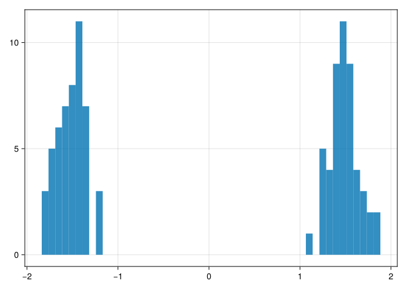

using CairoMakie
using Distributions
function stick_breaking(α; thresh = 1e-5)
π = []
remaining_stick = 1.0
while remaining_stick > thresh
β = rand(Beta(1, α))
push!(π, β * remaining_stick)
remaining_stick *= (1.0 - β)
end
return π ./ sum(π)
end; 0.1 Two-component Gaussian Mixture Model (GMM)
A generative model for a two-component Gaussian mixture, with \(z_i\) as the latent cluster assignment variable, can be written as
\[ \begin{align} \pi_1 &\sim Beta(a,b) \\ \pi_2 &= 1 - \pi_1 \\ \mu_1 &\sim N(0, 10) \\ \mu_2 &\sim N(0, 10) \\ z_i &\sim Cat(\pi_1, \pi_2) \\ x_i &\sim N(\mu_{z_i}, \sigma) \end{align} \]
Here the Beta distribution is used as a prior for the first mixing weight \(\pi_1\). The second mixing weight \(\pi_2\) is given by the constraint that \(\pi_1 + \pi_2 = 1\).
(Note: The Beta distribution can be seen as a characterization of a coin-flip).
0.2 K-component Gaussian Mixture Model
The model can be extended to more than two components by using the Dirichlet distribution as prior for the mixing weights. The Dirichlet distribution is the extension of the Beta distribution to multiple dimensions. It is the appropriate prior when we need to make a \(K\)-way choice.
\[ (\pi_1, \pi_2, \ldots, \pi_K) \sim \mathrm{Dirichlet}(\alpha_1, \ldots, \alpha_K) \propto \prod_{j=1}^C \pi_j^{\alpha_j - 1} \]
The Dirichlet distribution is the conjugate prior of the Categorical and Multinomial distributions. The mean is \(\pi_j = \alpha_j / \sum_k \alpha_k\) while the mode is \((\alpha_j - 1)/\sum_k(\alpha_k - 1)\) for \(\alpha_k > 1\).
(Note: The Dirichlet distribution with 6 components can be seen as the characterization of a dice).
The symmetric Dirichlet distribution has the same value \(\alpha\) for all components, i.e. \(\alpha_k = \alpha\). It is a good choice when there is no prior knowledge favouring one component over another. In that case, \(\alpha\) is called the concentration parameter.
The generative model for a K-component Gaussian Mixture Model with symmetric Dirichlet prior can be written as
\[ \begin{align} (\pi_1, \pi_2, \ldots, \pi_K) &\sim Dirichlet(K,\alpha) \\ \mu_k &\sim N(0, 10) \\ z_i &\sim Cat(\pi_1, \pi_2, \ldots, \pi_K) \\ x_i &\sim N(\mu_{z_i}, \sigma) \end{align} \]
0.3 Infinite Gaussian Mixture Model
Often the number of components \(K\) is not known in advance, and it might be arbitrarily large. In that case, one can use a Dirichlet Process (DP) \(DP(\alpha, G_o)\). The Dirichlet Process can be implemented using the stick-breaking construction. Here a stick of unit length is broken iteratively using a Beta distribution:
- start with a stick of length 1
- at iteration \(k\), break of a fraction \(\beta_k \sim Beta(1, \alpha)\) of the remaining stick. The length of this piece is \(\pi_k = \beta_k \prod_{j=1}^{k-1}(1 - \beta_j)\)
The \(\pi_k\) now correspond to the mixture weights. The parameters of the mixture components, \(\mu_k\) and \(\sigma_k\) are drawn from the base distribution \(G_o\).
To simulate the number of components \(K\), one stops the iteration when the remaining stick is shorter than some small threshold, and renormalizes the obtained mixture weights to sum to one.
Let’s look at the number of components we get as a function of \(\alpha\).
function simulate_k(α)
niter = 1000
k = zeros(Int64, niter)
for i = 1:niter
π = stick_breaking(α; thresh = 0.001)
k[i] = length(π)
end
return k
end
f = Figure()
hist(f[1,1], simulate_k(1.0); axis = (;title = "α = 1.0"))
hist(f[1,2], simulate_k(0.25); axis = (;title = "α = 0.25"))
hist(f[2,1], simulate_k(0.1); axis = (;title = "α = 0.1"))
hist(f[2,2], simulate_k(0.05); axis = (;title = "α = 0.05"))
f;┌ Warning: Found `resolution` in the theme when creating a `Scene`. The `resolution` keyword for `Scene`s and `Figure`s has been deprecated. Use `Figure(; size = ...` or `Scene(; size = ...)` instead, which better reflects that this is a unitless size and not a pixel resolution. The key could also come from `set_theme!` calls or related theming functions.
└ @ Makie ~/.julia/packages/Makie/pFPBw/src/scenes.jl:238using Turing
using Distributions
using DataFrames
using CairoMakie
using StatsFuns
function stickbreak(v)
K = length(v) + 1
cumprod_one_minus_v = cumprod(1 .- v)
eta = [if k == 1
v[1]
elseif k == K
cumprod_one_minus_v[K - 1]
else
v[k] * cumprod_one_minus_v[k - 1]
end
for k in 1:K]
return eta
end
# this version works with NUTS, but we do not get information about z[i]
@model function dp_gmm(y, K)
N = length(y) # Number of data points
μ ~ filldist(Normal(0, 3), K)
σ ~ filldist(Gamma(1, 1/10), K) # mean = 0.1
α ~ Gamma(1, 1/10) # mean = 0.1
v ~ filldist(Beta(1, α), K - 1)
π = stickbreak(v)
y .~ UnivariateGMM(μ, σ, Distributions.Categorical(π))
end
# this version does not work with NUTS (divergences, rhat NaN)
@model function dp_gmm2(y, K)
N = length(y) # Number of data points
μ ~ filldist(Normal(0, 3), K)
σ ~ filldist(Gamma(1, 1/10), K) # mean = 0.1
α ~ Gamma(1, 1/10) # mean = 0.1
v ~ filldist(Beta(1, α), K - 1)
π = stickbreak(v)
#z ~ filldist(Distributions.Categorical(π), N)
#y .~ UnivariateGMM(μ, σ, Distributions.Categorical(π))
#log_target = logsumexp(normlogpdf.(μ', σ', y) .+ log.(π)', dims=2)
#Turing.acclogp!(_varinfo, sum(log_target))
# Likelihood
for i in 1:N
z = rand(Distributions.Categorical(π))
y[i] ~ Normal(μ[z], σ[z])
end
enddp_gmm2 (generic function with 2 methods)Note, the second version has severe convergence problems. The reason is probably that the computed logprobability fluctuates a lot, depending on which z was chosen. The first version integrates over that assignment.
# Generate synthetic data
using Random
Random.seed!(123)
y = vcat(rand(Normal(-1.5, 0.15), 50),
#rand(Normal(-0.5, 0.15), 50),
# rand(Normal(0.5, 0.15), 50),
rand(Normal(1.5, 0.15), 50))
hist(y; bins = 50)┌ Warning: Found `resolution` in the theme when creating a `Scene`. The `resolution` keyword for `Scene`s and `Figure`s has been deprecated. Use `Figure(; size = ...` or `Scene(; size = ...)` instead, which better reflects that this is a unitless size and not a pixel resolution. The key could also come from `set_theme!` calls or related theming functions.
└ @ Makie ~/.julia/packages/Makie/pFPBw/src/scenes.jl:238
# Sample from the posterior
K = 5 # Maximum number of components
model = dp_gmm(y, K)
chain = sample(model, NUTS(), 1000)┌ Info: Found initial step size
└ ϵ = 0.046875
Sampling: 1%|▋ | ETA: 0:00:33Sampling: 2%|█ | ETA: 0:00:42Sampling: 3%|█▏ | ETA: 0:00:45Sampling: 3%|█▎ | ETA: 0:00:44Sampling: 4%|█▌ | ETA: 0:00:41Sampling: 4%|█▊ | ETA: 0:00:41Sampling: 5%|█▉ | ETA: 0:00:43Sampling: 5%|██▏ | ETA: 0:00:43Sampling: 6%|██▎ | ETA: 0:00:43Sampling: 6%|██▌ | ETA: 0:00:44Sampling: 6%|██▋ | ETA: 0:00:44Sampling: 8%|███▎ | ETA: 0:00:37Sampling: 12%|█████ | ETA: 0:00:24Sampling: 17%|███████ | ETA: 0:00:16Sampling: 22%|█████████ | ETA: 0:00:12Sampling: 26%|██████████▌ | ETA: 0:00:11Sampling: 32%|█████████████ | ETA: 0:00:08Sampling: 37%|███████████████▎ | ETA: 0:00:07Sampling: 44%|██████████████████ | ETA: 0:00:05Sampling: 50%|████████████████████▋ | ETA: 0:00:04Sampling: 56%|███████████████████████▏ | ETA: 0:00:03Sampling: 62%|█████████████████████████▋ | ETA: 0:00:03Sampling: 70%|████████████████████████████▌ | ETA: 0:00:02Sampling: 76%|███████████████████████████████▏ | ETA: 0:00:01Sampling: 83%|█████████████████████████████████▉ | ETA: 0:00:01Sampling: 89%|████████████████████████████████████▌ | ETA: 0:00:01Sampling: 96%|███████████████████████████████████████▎ | ETA: 0:00:00Sampling: 100%|█████████████████████████████████████████| Time: 0:00:05Chains MCMC chain (1000×27×1 Array{Float64, 3}):
Iterations = 501:1:1500
Number of chains = 1
Samples per chain = 1000
Wall duration = 10.39 seconds
Compute duration = 10.39 seconds
parameters = μ[1], μ[2], μ[3], μ[4], μ[5], σ[1], σ[2], σ[3], σ[4], σ[5], α, v[1], v[2], v[3], v[4]
internals = lp, n_steps, is_accept, acceptance_rate, log_density, hamiltonian_energy, hamiltonian_energy_error, max_hamiltonian_energy_error, tree_depth, numerical_error, step_size, nom_step_size
Summary Statistics
parameters mean std mcse ess_bulk ess_tail rhat e ⋯
Symbol Float64 Float64 Float64 Float64 Float64 Float64 ⋯
μ[1] 1.4919 0.0262 0.0018 316.2884 72.7762 1.0151 ⋯
μ[2] -1.5135 0.0211 0.0008 663.4878 553.8245 1.0028 ⋯
μ[3] 0.1292 3.1078 0.1201 676.3908 314.1086 0.9990 ⋯
μ[4] 0.0872 3.0390 0.1293 566.5764 577.6553 1.0117 ⋯
μ[5] -0.1388 3.0930 0.1303 585.2988 565.6373 1.0006 ⋯
σ[1] 0.1646 0.0169 0.0008 465.7721 574.1878 1.0133 ⋯
σ[2] 0.1564 0.0164 0.0008 513.8537 411.6337 0.9999 ⋯
σ[3] 0.1074 0.1009 0.0042 345.3876 233.3368 0.9995 ⋯
σ[4] 0.0926 0.0970 0.0031 512.8303 261.1530 0.9995 ⋯
σ[5] 0.0916 0.0918 0.0042 276.3268 232.0134 1.0012 ⋯
α 0.1505 0.0970 0.0064 187.4282 278.4005 1.0026 ⋯
v[1] 0.5044 0.0488 0.0021 572.6981 494.1590 1.0013 ⋯
v[2] 0.9924 0.0233 0.0030 112.5632 97.3042 1.0006 ⋯
v[3] 0.8786 0.2194 0.0070 380.7807 280.9320 0.9998 ⋯
v[4] 0.8650 0.2412 0.0087 287.4378 254.3015 1.0048 ⋯
1 column omitted
Quantiles
parameters 2.5% 25.0% 50.0% 75.0% 97.5%
Symbol Float64 Float64 Float64 Float64 Float64
μ[1] 1.4409 1.4754 1.4915 1.5078 1.5574
μ[2] -1.5546 -1.5274 -1.5154 -1.4998 -1.4719
μ[3] -6.3365 -1.8780 0.2283 2.2215 5.7963
μ[4] -5.6834 -1.8251 0.1119 2.1943 5.6727
μ[5] -6.1810 -2.1172 -0.1327 2.0019 6.2577
σ[1] 0.1361 0.1528 0.1633 0.1751 0.2022
σ[2] 0.1276 0.1454 0.1548 0.1659 0.1939
σ[3] 0.0037 0.0314 0.0784 0.1553 0.3813
σ[4] 0.0019 0.0219 0.0594 0.1287 0.3502
σ[5] 0.0026 0.0237 0.0660 0.1296 0.3497
α 0.0316 0.0822 0.1268 0.1928 0.3937
v[1] 0.4131 0.4681 0.5049 0.5384 0.5972
v[2] 0.9209 0.9968 0.9999 1.0000 1.0000
v[3] 0.1868 0.8769 0.9894 1.0000 1.0000
v[4] 0.1189 0.8591 0.9929 1.0000 1.0000
0.4 References
- https://luiarthur.github.io/TuringBnpBenchmarks/dpsbgmm